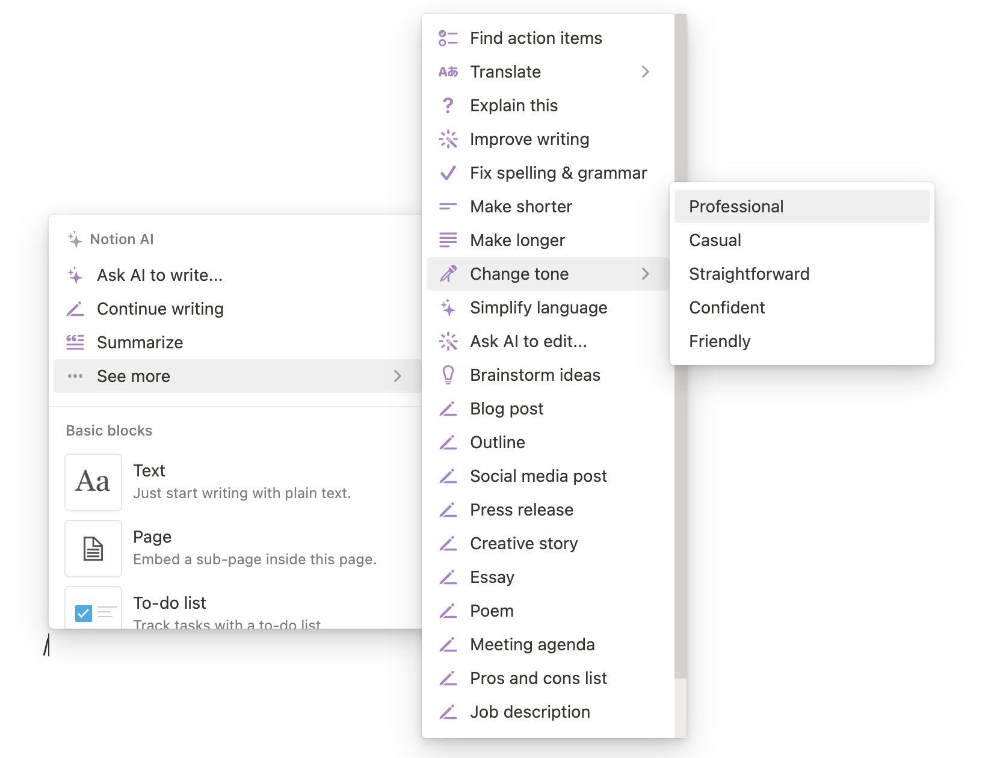

2023-02-13 chatGPT 在攻陷所有人
目录
承认吧，现在全世界最火就是chatGPT。
-
去参加了王建硕老师那边组织的关于chatGPT的讨论。
- 会上的讨论：对新技术进行哲学思考无疑是最让我震撼的。正因为他们进行深度思考，才能真正看到事物的本质，才能正确判断事物的走向。
- 从心理学和教育学来看，也开拓了我的眼界。
- 从高效使用和商业化来看，它无疑会改变很多人的生活。
-
chatGPT的使用感受很不错。
- 我试用的方面主要在让它生成一些小功能的代码，例如爬虫，处理数据，修bug等。之前google copilot出来的时候，我的感觉没有那么惊艳。copilot可以补全代码，但是很奇怪，它经常显示大段我不需要的代码，看着闹心。
- 如何让chatGPT有更好的效果呢？那就是写更好的prompt，也就是清晰简洁聚焦的提问。
- 昨天看了好几篇关于prompt的技术文章，原来国外的prompt的技术已经发展得很厉害了。 看了一些好的prompt的例子，给我一种扑面而来的熟悉感，这不就是高中时候老师出的题嘛。“请用XX写一篇关于XX的文章，文体限制在议论文，不超过800字。”
- 随着chatGPT兴起，产生了一种新的职业，叫做prompt engineer，他们的工作是研发出更好的提问方式，引导chatGPT给出的答案更符合用户的预期。
- 很多人的感受是和chatGPT对话，就像和一个小朋友交流。你不能给它一个宏大的问题，让它去解决。但是可以一步一步引导它，告诉它每一步做什么，最后达成自己的目标。
- 晚上我又看了几个chatGPT的应用，我看到的最惊艳的两个应用有两个。
第一个是语言学习，例如和azure结合起来，练习口语。或者让chatGPT修改文章，斟酌字词，问chatGPT某句话的某个词是什么意思，怎么理解。这个应用基本上是全世界人民的需求。只要有沟通和交流的需求在，就会想要学习新的语言。
试想一下，如果你有了语音版chatGPT，相当于你有了一个24小时的外教。当然openai和azure都需要api key，需要花一些钱。
第二个是用chatGPT生成文本，然后把这些文本用AI工具转成图片，最后形成动画或视频。现在很多人在做的抖音号视频号（其实就是垃圾营销）是可以用这种方式生成的。 - 当然作为一个技术人员，我肯定对底层原理感兴趣。最主要的创新点在于in-context learning、强化学习以及庞大的数据输入。公司在年前就请某个大佬在公司做了chatGPT的介绍，不得不说公司领导的嗅觉还是很灵敏的。
- 搞了几年互联网和AI，大家最后发现，科技的前沿还是在美国。国内大小厂只能跟在国际大厂的屁股后面。
-
它的缺点在于：
- 它的结果不准确。大量的例子表明它不擅长计算，并且文章写得稀里糊涂。所以它的结果是否是正确的，需要用户有能力做出判断。
- 模型未开源，可能永远也不会开源。
-
去年年底Notion推出Notion AI的时候，我就报名了。这个月7号收到官方的邮件说我可以使用了。我用Notion AI的感受也非常好。 它只要在notion里面打一个’/‘就可以了。
它的功能有很多：
- 写博客、写文章
- 写诗
- 写文章总结
- 发朋友圈
- 翻译
- 改变文字的语气（严肃、轻松、正式、自信等）
- 所有的文章都可以变长变短
有一天晚上我给室友演示Notion AI，她是做别的行业，不太懂AI这些。那天晚上我刚好吃了咖喱牛腩，就让Notion AI以"咖喱牛腩"写一篇文章。 看着文字逐渐出来的时候，她不禁激动起来，惊呼"大厉害了，要是我有这样一个助手就好了"！ 有点感动，AI真的在改变我们的生活吧！